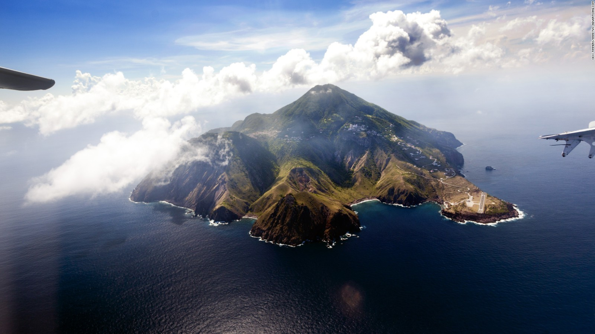
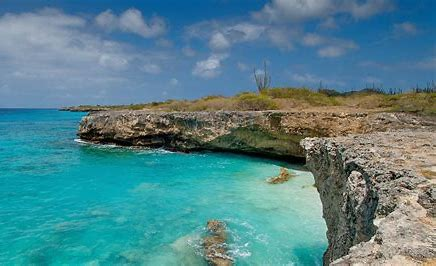
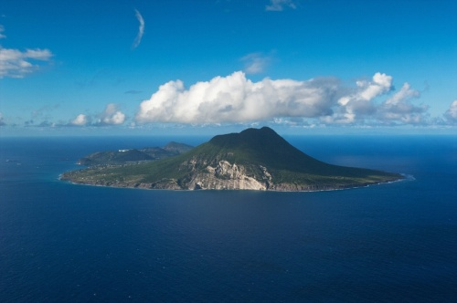
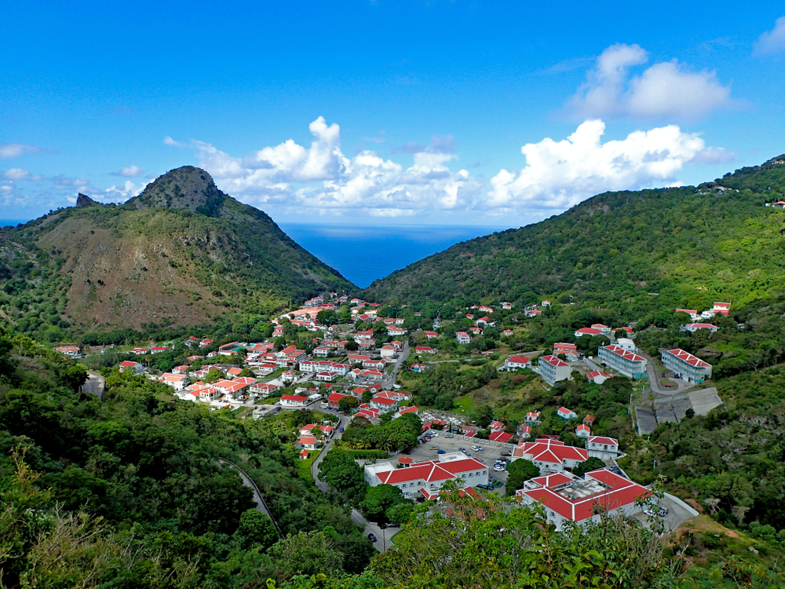
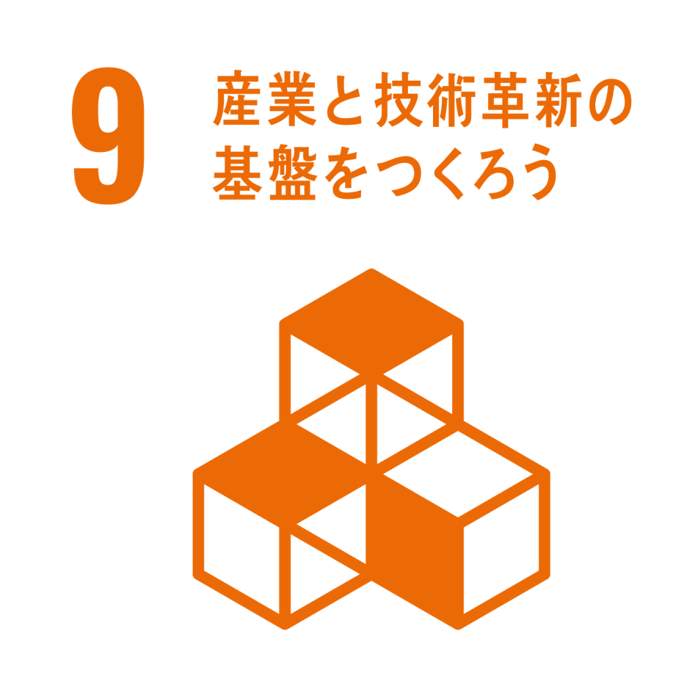

ボネール、シント・ユースタティウス
ボネール、シント・ユースタティウス及びサバ
及びサバについて
1.位置
 カリブ海にあるオランダ領の3つの自治体（ボネール、シント・ユースタティウス、サバ）を併せた呼称。
カリブ海にあるオランダ領の3つの自治体（ボネール、シント・ユースタティウス、サバ）を併せた呼称。
2.場所

.jpg)
.jpg) いずれの島も熱帯に属しており、温暖である。ウィンドワード諸島には、夏季にハリケーンが襲来する。
いずれの島も熱帯に属しており、温暖である。ウィンドワード諸島には、夏季にハリケーンが襲来する。
3.人々の生活
ボネール島
雨が少なく乾燥しており、内陸部には乾燥林が生えている。ボネール島の周辺にはサンゴ礁の裾礁が発達しており、海岸には塩類平原、湧水、砂丘、砂浜、マングローブ、ラグーンなどが見られる。

シント・ユースタティウス島
年間約180万人とされる観光客が訪れる著名な観光地であり、2010年にオランダ王国構成国になった。

サバ島
サバ島は急峻な火山島であり、狭小な島の中央にそびえるシーナリー山は、オランダ王国の最高峰である。
4.空間的相互作用
ボネール島
経済は漁業が中心であり、また、古くから続く塩の生産も行われている
シント・ユースタティウス島
経済は他のカリブ諸島と比べて、貧弱である。観光産業も島の重要な産業でもある。
サバ島
島の重要な収入源は、サバ医科大学の学生が支払う授業料である。農業はイモ類などを栽培しており、ほとんど自給自足である。観光もサバ島の重要な産業の一つである。近年はエコツーリズムで知られており、スキューバダイビングやハイキングが人気である。島周辺の海域はサバ国立海洋公園に指定されている。
5.地域
ボネール島
ボネール島の名声はその自然のままの海洋生物であり、「ダイバーの楽園」という称号を与えられています。 島の保護されたサンゴ礁と豊富な海洋生物は、ダイバーにもシュノーケラーにも同様に水中のワンダーランドを提供しています。
シント・ユースタティウス島
クイール山とボーヴェン山は1998年にクイール/ボーヴェン国立公園に指定され、クイール国立公園に隣接する熱帯多雨林が生い茂る植物地帯はミリアムシュミット植物園となっている。カリブ海の「歴史的な宝石」と呼ばれている。

サバ島
標高の高い場所にあるサバ島の森は、霧やコケが景観を演出しており、訪問者によって「エルフの森」（Elfin Forest）と形容されている。

6.SDGs

現在、強力なスタティアをさらに構築するために複数のプロジェクトを管理しているそうです。